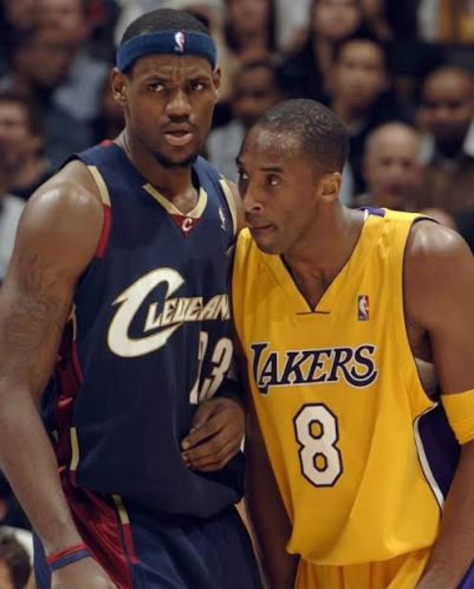
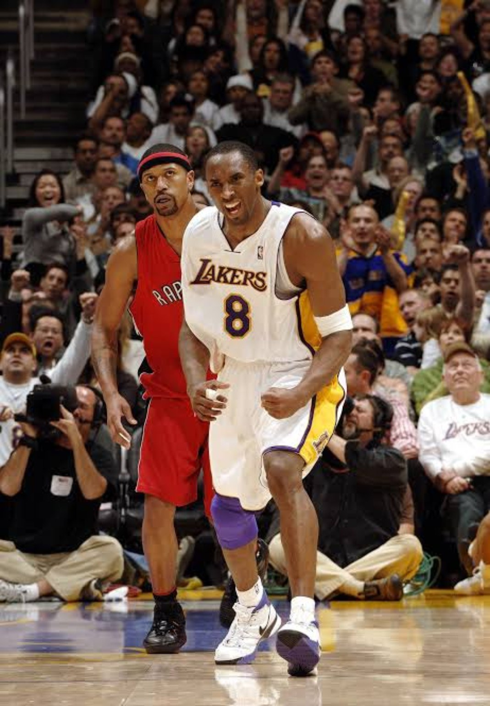
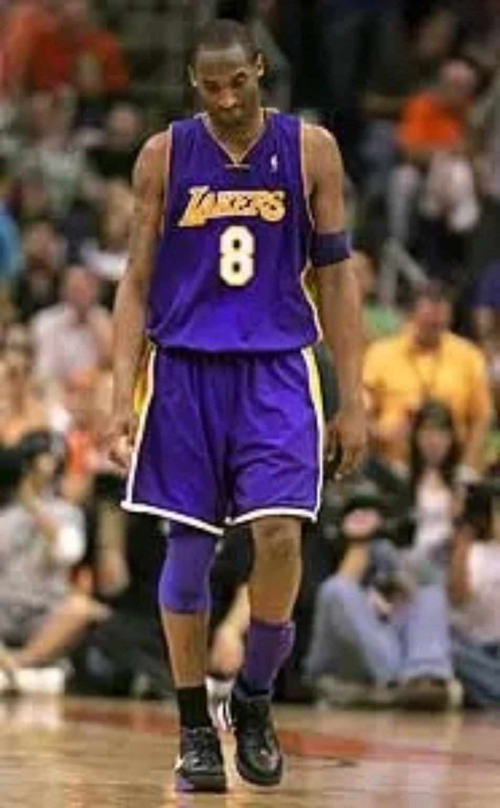
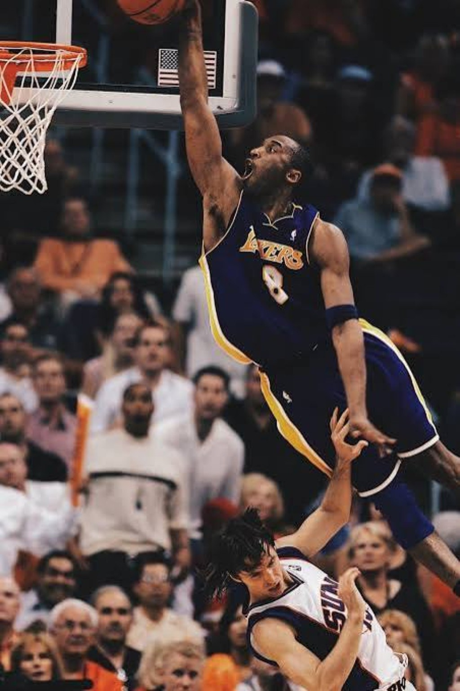

01. BETWEEN DYNASTIES.
The easiest way to remember 2005–06 is the numbers. That almost undersells it. This was a strange point in Kobe Bryant’s career: the Shaq partnership was over, the three-peat was already history, the Lakers had missed the playoffs the season before, and Phil Jackson had returned to coach a roster that was nowhere near the championship groups Los Angeles had been used to.
Lamar Odom was the clear second-best player and gave the Lakers 14.8 points, 9.2 rebounds and 5.5 assists a night. After that came Smush Parker, Kwame Brown, Chris Mihm, Luke Walton, Brian Cook and a teenage Andrew Bynum barely beginning his career. This was not a roster built to overpower the West. The offense still finished eighth in offensive rating, and the Lakers won 45 games. The reason the whole thing had a ceiling at all was No. 8.

02. 62–61.
December 20, 2005 was the warning shot. Against a Dallas team that would finish the season in the NBA Finals, Kobe scored 62 points in only three quarters. The detail that made the game almost absurd was the scoreboard: after three, Kobe had 62. Dallas had 61.
He never played the fourth. He didn’t need to. The game became the purest preview of what the season was turning into — Kobe attacking from everywhere on the floor, living at the line, hitting contested jumpers and putting entire defenses into panic mode.
THREE QUARTERS.
The Mavericks reached 61 points through three periods. Kobe reached 62 by himself.
03. 81.
Then came January 22. Toronto led by 18 in the third quarter, and the game turned into something nobody in the building could fully process while it was happening. Kobe scored 27 in the third, 28 in the fourth and 55 after halftime. He finished with 81 points on 28-of-46 shooting, including seven threes and 18 free throws, in a 122–104 comeback win.
The number matters because only Wilt Chamberlain’s 100 sits above it. But the way it happened matters too. This was not empty scoring in a blowout. Los Angeles was losing. Kobe’s scoring flipped the game. He accounted for nearly everything the Lakers did offensively down the stretch and turned a regular January night into permanent NBA history.
28-of-46 from the field • 7-of-13 from three • 18-of-20 at the line • 55 points in the second half.

04. THE LOAD WAS THE STORY.
Kobe averaged 35.4 points across 80 games while playing 41 minutes a night. He took 27.2 shots per game and still shot 45 percent from the floor and 85 percent at the line. He produced 27 games of at least 40 points and six games of at least 50. This was volume without the normal drop-off that makes volume easy to dismiss.
The season can get reduced to “Kobe shot a lot,” but that misses the context. The Lakers needed him to shoot a lot. Their next-leading scorer was Odom at 14.8. Parker was at 11.5. Brown averaged 7.4. The triangle gave the team structure, but there was no second elite scorer waiting to take over possessions when Kobe sat or when a defense loaded up on him.
He also made First Team All-NBA and First Team All-Defense. That combination is part of why the season remains so hard to compare with other scoring explosions. Kobe was carrying an extreme offensive burden while still being recognized among the league’s top perimeter defenders.

05. THE MVP ARGUMENT NEVER WENT AWAY.
NASH WON IT.
4DK STILL VOTES KOBE.
Steve Nash had a real case. Phoenix won 54 games, he averaged 18.8 points and 10.5 assists, and he kept an elite offense moving without Amar’e Stoudemire for almost the entire season. Nash received 57 first-place votes and won his second straight MVP. Kobe finished fourth behind Nash, LeBron James and Dirk Nowitzki.
But this is where 4DK separates 2005 from 2006. Nash’s first MVP is easy to defend. In 2005–06, the argument changes. Kobe led the league in scoring by a huge margin, carried a far thinner roster to 45 wins, produced one of the greatest scoring seasons ever and was still a First Team All-Defense selection.
4DK’s ballot goes to Kobe. Not because 81 happened. Because the entire season was an 80-game exercise in how much offensive responsibility one superstar could absorb without the team collapsing.
06. 3–1 — AND THEN PHOENIX.
The postseason is why this season can’t be turned into a perfect myth. The seventh-seeded Lakers drew Nash and the Suns and somehow pushed them to the edge. Los Angeles went up 3–1 and had a real chance to close the series.
Game 6 became the heartbreak. Kobe scored a playoff-high 50 points, but Tim Thomas hit the late three that forced overtime and Phoenix won 126–118. Game 7 became even more controversial. Kobe scored 23 in the first half, then took only three shots in the second and finished with 24 as Phoenix ran away with the game.
People have argued about that second half ever since. Was he trying to prove a point after being criticized for shooting too much? Was he following the game plan and trying to get teammates involved? Did frustration take over? Twenty years later, the box score can tell us what happened — one second-half point on three shots — but it can’t completely settle why.
That ending matters because it keeps the season honest. Peak individual dominance did not magically erase roster flaws or guarantee playoff advancement. The Mamba Files isn’t here to clean up the history. The weird ending is part of the file.

07. WAS THIS PEAK KOBE?
It depends on what “peak” means. If the question is which Kobe was the most terrifying individual scorer? 2005–06 has the strongest case. The first step was still explosive, the elevation was still ridiculous, the post game was expanding, the footwork was elite and there was seemingly no shot he considered unavailable.
If the question is which Kobe gave you the best chance to win a championship? the answer may be 2008 through 2010. That version had slightly less athletic explosion but more control, more patience and a better feel for when to dominate the ball and when to bend a defense for everyone else.
That is what makes File 001 worth revisiting. The 2006 season was not the neatest version of Kobe’s greatness. It may have been the loudest. It was a season built on burden, defiance and a level of shot-making that sometimes stopped looking like normal NBA basketball.
SOURCES / RECORD
Season statistics and roster context: Basketball-Reference, 2005–06 Lakers and NBA player tables. Historical game details: NBA.com’s 81-point retrospective and 62-point history features. MVP voting: Basketball-Reference and the NBA’s 2006 award release. Playoff game details: Basketball-Reference box scores and NBA.com’s 2006 Suns–Lakers Game 6 archive.
NBA — 81-point history • Basketball-Reference — 2005–06 Lakers • 2006 MVP voting